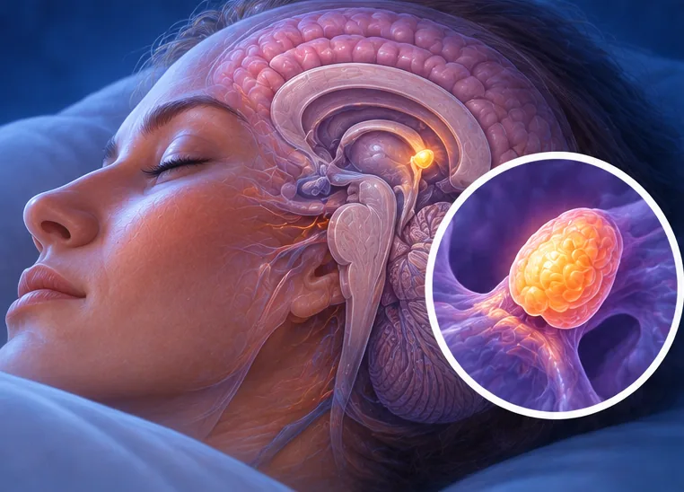

Narkolepsi
Keadaan tidur jangka panjang dengan rasa mengantuk yang kuat dan tiba-tiba pada siang hari
Apa itu
Dalam narkolepsi, otak tidak dapat mengekalkan waktu tidur dan jaga dengan stabil. Seseorang mungkin tertidur secara tiba-tiba pada siang hari, malah semasa bercakap atau makan. Doktor tidur boleh menerangkan dengan lebih lanjut.
- Otak dan tidur
- Selalunya bermula pada usia muda
- Mengantuk kuat secara tiba-tiba
- Jumpa doktor
- Doktor tidur, pakar neurologi atau doktor keluarga
- Biasa pada
- Selalunya bermula pada remaja atau dewasa muda
- Berjangkit
- Tidak
- Perjalanan
- Biasanya berpanjangan; doktor boleh membantu anda menguruskannya
Tanda biasa
Mengantuk pada siang hariMengantuk berlebihan siang hari
Tanda-tanda lain
- Tertidur secara tiba-tiba semasa bercakap, makan atau bekerja
- Otot tiba-tiba lemah apabila emosi kuat seperti ketawa
- Rasa tidak dapat bergerak seketika semasa hendak tidur atau bangun
- Tidur malam yang terganggu
Mengapa ia berlaku

Punca belum diketahui sepenuhnyaIdiopatik 
Diwarisi dalam keluargaKecenderungan genetik
Punca lain
- Kekurangan bahan kimia otak yang membantu kita kekal berjaga
- Ia mungkin bermula selepas sakit atau perubahan besar pada badan
Jumpa doktor dahulu jika
- Tertidur semasa memandu atau melakukan sesuatu yang berbahaya: berhenti dan jumpa doktor segera
- Jatuh atau cedera kerana tertidur tiba-tiba atau otot lemah: ke hospital jika cedera teruk
- Rasa mengantuk yang bertambah teruk atau menjejaskan kerja atau sekolah
- Berasa sangat murung atau ada fikiran mencederakan diri: jumpa doktor segera atau hubungi 999
Jika mana-mana berkenaan, sila jumpa doktor sebelum sesi.
Halaman ini ialah maklumat am. Sila terus mengambil ubat biasa anda dan terus berjumpa doktor.
Teruskan mengambil ubat biasa anda dan terus berjumpa doktor. Sesi kami ialah sokongan lembut dan tidak menggantikan rawatan perubatan.
Menjaga diri
Kurangkan alkoholPengurangan alkohol
Lebih banyak cara menjaga diri
- Kekalkan waktu tidur dan bangun yang tetap, walaupun pada hari cuti
- Rancang tidur sebentar pada siang hari jika doktor bersetuju
- Elakkan memandu atau menggunakan mesin apabila sangat mengantuk
Beritahu ahli terapi anda
- Epilepsi atau sawan
- Kehamilan
- Penyakit jantung
Ahli terapi anda akan menyemaknya bersama anda sebelum bermula.
Soalan dan jawapan
Apakah Narkolepsi?
Keadaan tidur jangka panjang dengan rasa mengantuk yang kuat dan tiba-tiba pada siang hari. Dalam narkolepsi, otak tidak dapat mengekalkan waktu tidur dan jaga dengan stabil. Seseorang mungkin tertidur secara tiba-tiba pada siang hari, malah semasa bercakap atau makan. Doktor tidur boleh menerangkan dengan lebih lanjut.
Apakah tanda biasa Narkolepsi?
Mengantuk pada siang hari
Mengapa Narkolepsi berlaku?
Punca belum diketahui sepenuhnya · Diwarisi dalam keluarga
Bagaimana menjaga diri dengan Narkolepsi?
Kurangkan alkohol
Bolehkah sesi AI Body Master membantu Narkolepsi?
Sesi ialah sokongan meridian tanpa jarum yang lembut untuk kesejahteraan anda. Ia tidak merawat atau menyembuhkan Narkolepsi dan tidak menggantikan ubat atau doktor anda. Beritahu ahli terapi anda sebelum sesi bermula.
Keadaan berkaitan
Rujukan: General information based on public health sources such as Mayo Clinic, NHS, Cleveland Clinic and NCBI StatPearls.
Halaman dikemas kini: 2026-11-01